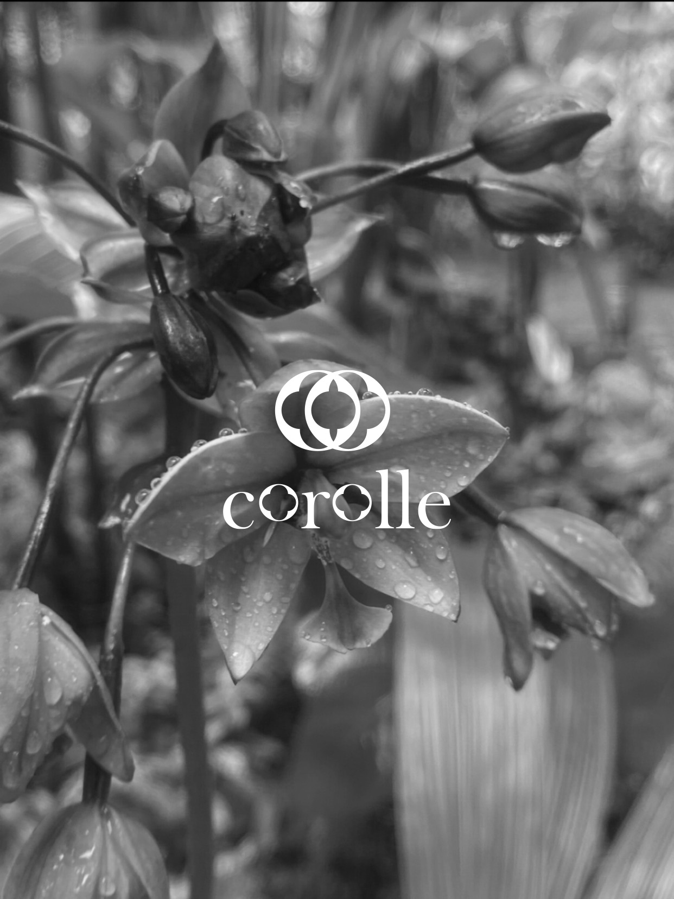
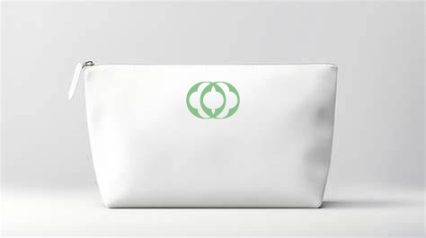
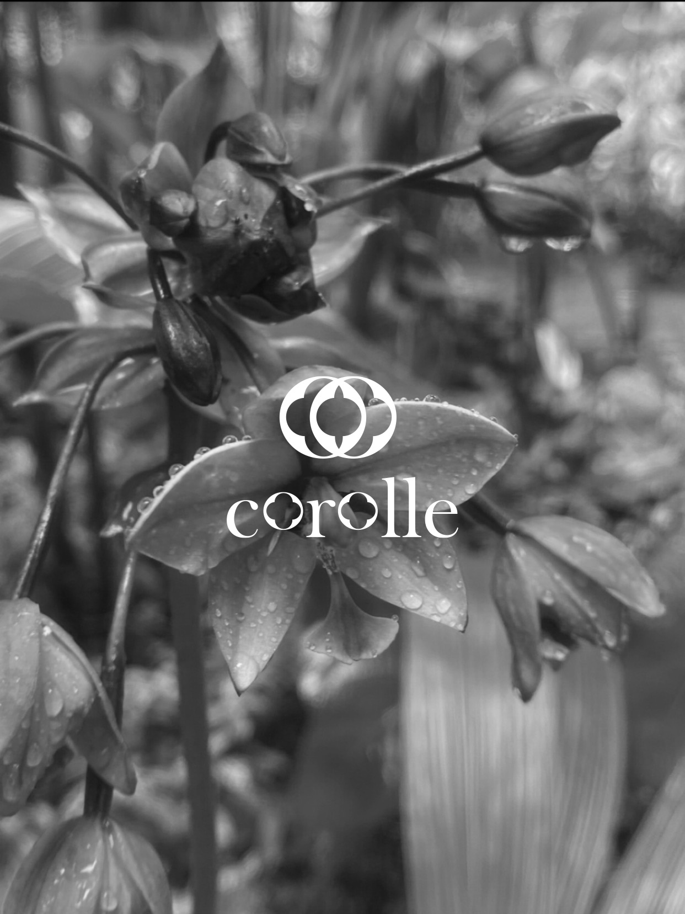
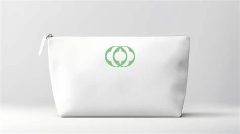
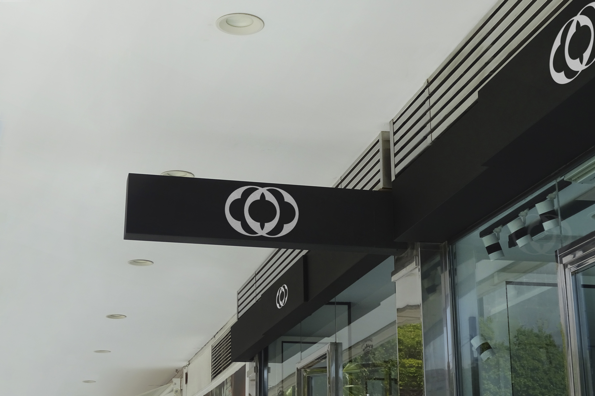
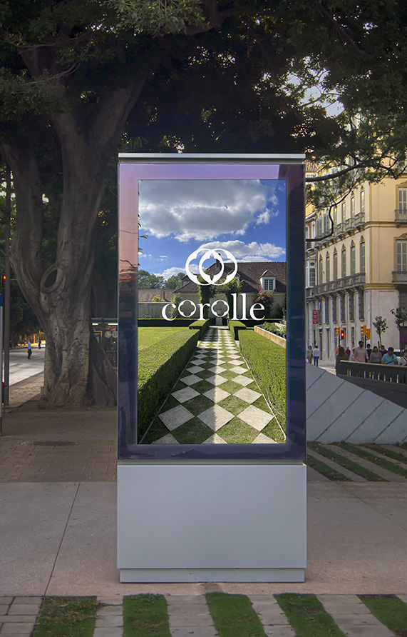
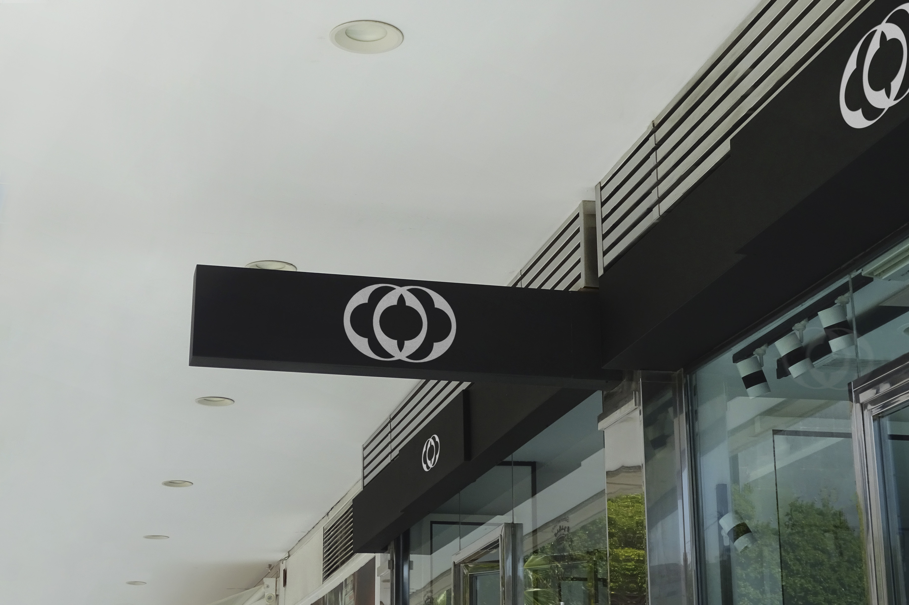
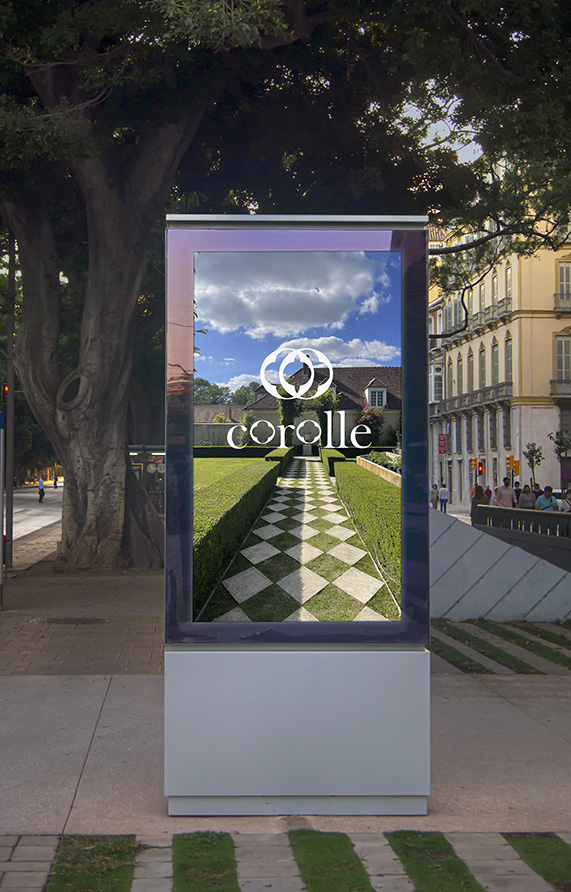

Corolle
IDENTITE VISUELLE/ fictif - logotype - motif
Issu d’un brief créatif et fictif, le but a été de concevoir le logotype et un principe de motif pour une marque de soins et de bien-être se nommant COROLLE. L’environnement naturel retranscrit par cette marque se démarque par son authenticité et son air frais. Pour se faire, il a été l’idée de créer un principe de combinaison de pétales lié au mot «corolle» qui se rencontrent et se mélangent pour garantir un changement d’air constant. Cette émancipation naturelle se perçoit dans le décalage des «o» sur le typogramme. Des formes à la fois simples et organiques nous promettent une composition «vraie» et naturelle des produits proposés. Un principe de module permet de garder cette approche naturelle qui varient dans le temps. Plusieurs motifs pour la marque ont alors pu se concevoir pour garantir une constante métamorphose


 



 


